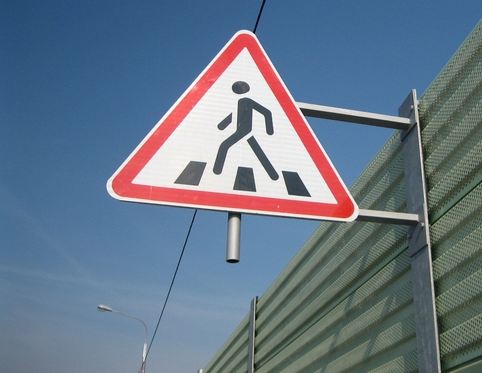
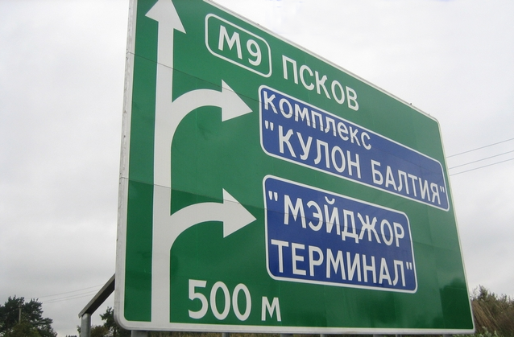
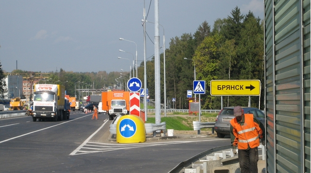
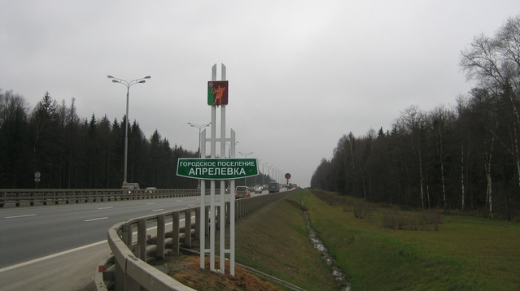
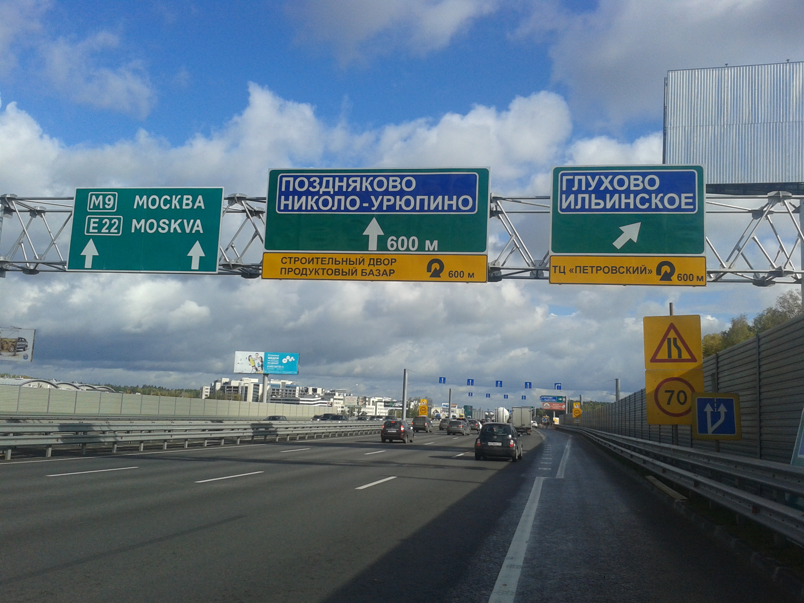

Добро пожаловать на сайт компании OOO "Инфо-Знак"!
Наша компания специализируется на установке и изготовлении дорожных знаков, лежачих полицейских, дорожных буферов, дорожных зеркал и других дорожных технических средств.
Контакты
Найти на Яндекс.Картах
Экранированные знаки
Основные направления дорожного строительства:
- Изготовление дорожных знаков и последующая установка по желанию клиента;
- Установка ИДН (искусственно-дорожная неровность) — лежачий полицейский;
- Изготовление и установка дорожных стел для городских и сельских населенных пунктов;
- Разработка проектов организации дорожного движения;
- Установка защитных буферов, информационных столбиков, дорожных ограждений, указателей маршрутного ориентирования, дорожных зеркал;
- Изготовление и установка щитов индивидуального проектирования.
Дорожный знак
Дорожный знак — это неотъемлемая часть любой автомобильной дороги. На дорожном знаке изображаются пути направления движения, указывается предельная допустимая скорость для данного участка дороги и прочая информация.
Изготовление дорожных знаков
Сегодня изготовление дорожных знаков это не сложный процесс, но от качества исполнения дорожного знака зависит не только срок службы, но правильность отображаемой информации, поэтому все дорожные знаки должны изготавливаться согласно ГОСТам . При изготовлении дорожных знаков используются экологически безопасные материалы. Оцинкованная сталь — основание дорожного знака и наклеиваемая на неё светоотражающая пленка сертифицирована.
Мы изготавливаем дорожные знаки и информационные щиты любой сложности в короткие сроки. С ценами на наши услуги можно ознакомиться в прайс-листе
Информационный щит
Если Вам необходимо изготовить информационный щит согласно ГОСТам России, обращайтесь к нам. Мы изготовим и установим информационный щит, как для организации дорожного движения, так и рекламный щит с информационным содержанием.
Лежачий полицейский

Лежачий полицейский — необходимая часть дорожного покрытия, предназначенная для снижения скорости автомобиля на определенных участках дороги. Популярными местами для установки лежачего полицейского являются дороги, возле которых расположены учебные заведения, жилые зоны и пешеходные переходы. Приближаясь к лежачему полицейскому, автомобилист заметит предупреждающий знак, что побудит его сбросить скорость на данном участке дороги. Лежачий полицейский или искусственная дорожная неровность (ИДН) возможно установить на дороге любой ширины. Установка лежачего полицейского производится согласно ГОСТам.
Компания "ИНФО-Знак" осуществляет монтаж следующих видов лежачих полицейских:
- Лежачий полицейский — ИДН 500 серия А;
- Лежачий полицейский — ИДН 500 серии Б;
- Лежачий полицейский — ИДН 900.
Дорожный буфер
Применять дорожные буфера на дорогах России стали сравнительно недавно. Прежде всего, дорожный буфер предназначен для смягчения удара автомобиля, и как следствие снижение вероятности травмы или смертельного исхода для водителя и пассажира автомобиля после столкновением с дорожным буфером. Популярными местами для установки дорожных буферов являются места разделительной полосы на дороге, торцевые части дорожных ограждений барьерного типа, зоны пешеходного перехода (здесь дорожный буфер также предназначен для защиты пешеходов), в местах, где опора моста расположена на разделительной полосе проезжей части, там также устанавливают дорожные буферы.
Не менее важным является установка дорожного буфера в местах проведения долгосрочных дорожных работ. Возможна, установка нескольких дорожных буферов друг за другом — для увеличения амортизации.
Дорожные буфера изготавливаются из сертифицированного материала. Как правило, для увеличения амортизации, внутрь заливается вода или раствор с солью, для того, чтобы вода не кристаллизовалась при отрицательной температуре. Также возможно наполнение дорожного буфера песком. Наполнение происходит через специальное герметичное отверстие, расположенное в корпусе дорожного буфера.
В местах, где целесообразно установить дорожный буфер, пренебрегать его установкой не следует. Статистика показывает, что в ряде ДТП, именно дорожный буфер спасал водителей автомобилей от летального исхода.
Установка дорожных зеркал
Дорожные зеркала используют на опасных участках дорог, выездах и перекрестках с ограниченным обзором, на КПП, на наружных постах охраны, на стоянках, парковках и других местах, где ограничен угол обзора. Дорожные зеркала — необходимое техническое средство для облегчения движения.
Городская стела
Также ООО "ИНФО-Знак" предлагает размещение на федеральных трассах Московской область желтые информационные модули (под дорожные указатели).
По желанию мы предоставляем Вам комплексную программу, в которую входят разработка проектной документации, сопровождение и согласование проектов, изготовление дорожных средств, с последующей их установкой. Все работы проводятся согласно ГОСТам технических средств организации дорожного движения.